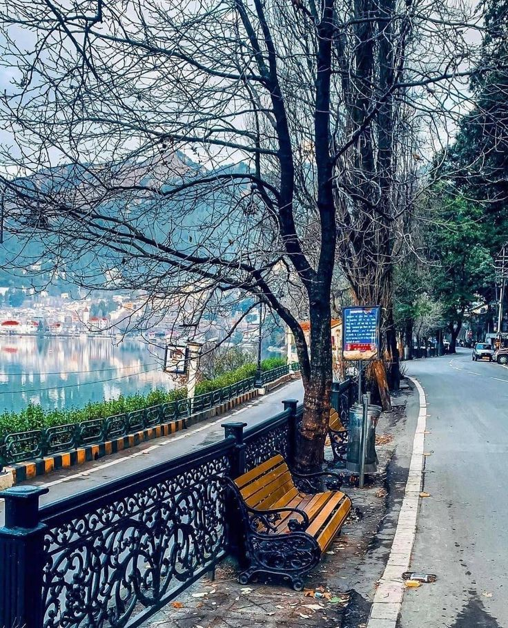
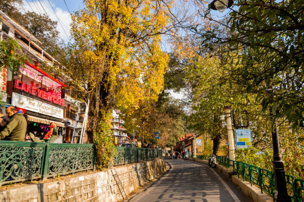
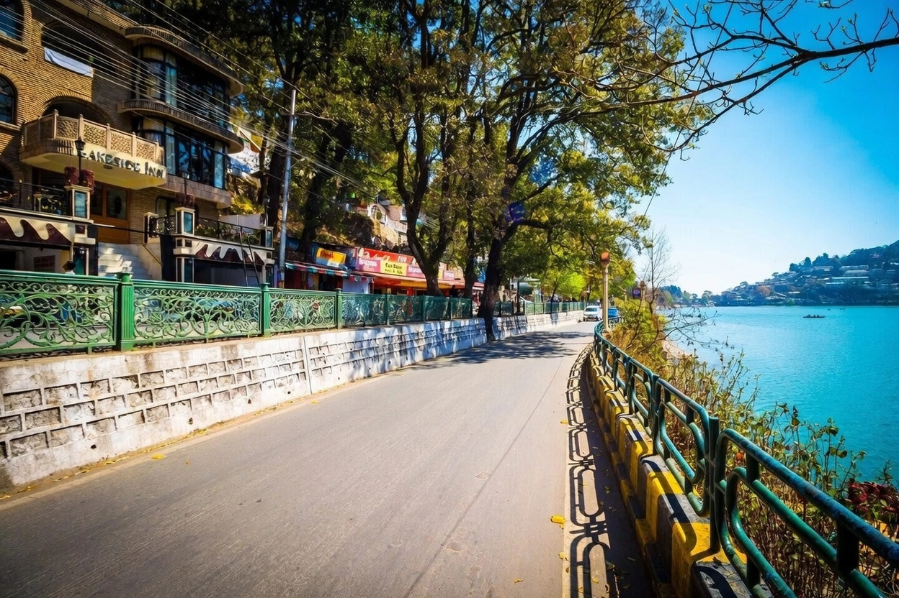

Mall Road, also known as Govind Ballabh Pant Marg, is the beating heart and most iconic street of Nainital. This bustling pedestrian promenade runs along the northern edge of Naini Lake, offering breathtaking views of the water and surrounding hills. Lined with colorful shops, cozy cafes, street vendors, and heritage buildings, it’s the perfect blend of local culture, colonial charm, and mountain serenity.
As the sun sets, Mall Road comes alive with warm lights, the sound of laughter, and the gentle lapping of the lake. Visitors can enjoy street food like momos, corn, and hot maggi, shop for candles, woolens, and local handicrafts, or simply sit by the lake and watch the reflection of the hills in the water. It’s a place where time slows down, and the spirit of Devbhoomi feels closest — a perfect spot to feel the pulse of Nainital’s everyday life and its timeless beauty.
Evening (sunset to 9–10 PM) for the magical lights and lively vibe, or early morning for peaceful walks and lake views.
Car-free zone, stunning lake reflections, colonial-era buildings, street food stalls, and the iconic Naina Devi Temple nearby.
Boating on Naini Lake, shopping for candles & shawls, trying local street food, photography at sunset, and people-watching.
"Mall Road isn’t just a street — it’s where the mountains meet the marketplace, and every step feels like a gentle conversation between nature and human joy."